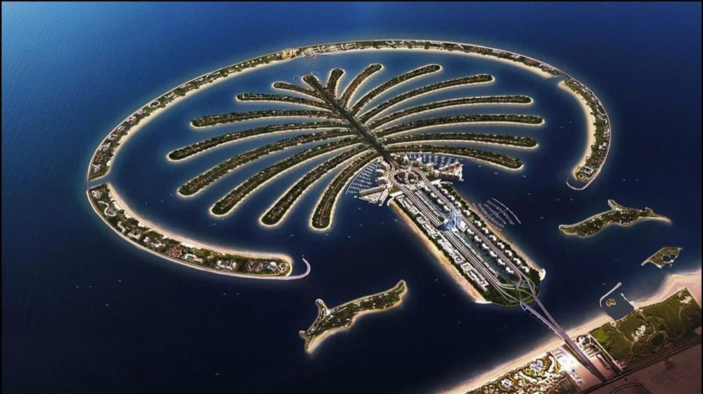
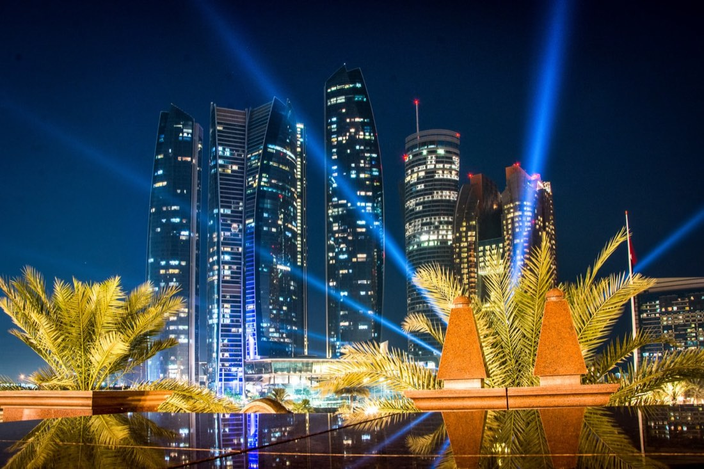

Orta DoğuÖnceki dönemOrta Doğu
Dubai ve Abu Dabi başta olmak üzere Orta Doğu turları.
Yeni dönem tarihleri için bizi arayın. Aşağıdaki turlar önceki dönemde yayınlanan programlardır; rota ve program fikri vermek için burada tutulur. Güncel tarih, fiyat ve kontenjan bilgisi için talep formunu doldurabilir, WhatsApp veya telefonla ulaşabilirsiniz.
6 turKartlara tıklayarak programı ve fiyat bilgisini görün.
 Orta DoğuÖnceki dönem
Orta DoğuÖnceki dönem Orta DoğuÖnceki dönem
Orta DoğuÖnceki dönem Orta DoğuÖnceki dönem
Orta DoğuÖnceki dönem Orta DoğuÖnceki dönem
Orta DoğuÖnceki dönem
Orta DoğuÖnceki dönemBu filtrelere uyan tur bulunamadı.
Filtreleri temizleyin ya da bize yazın, size uygun programı birlikte bulalım.
Filtreleri temizleyin ya da bize yazın, size uygun programı birlikte bulalım.